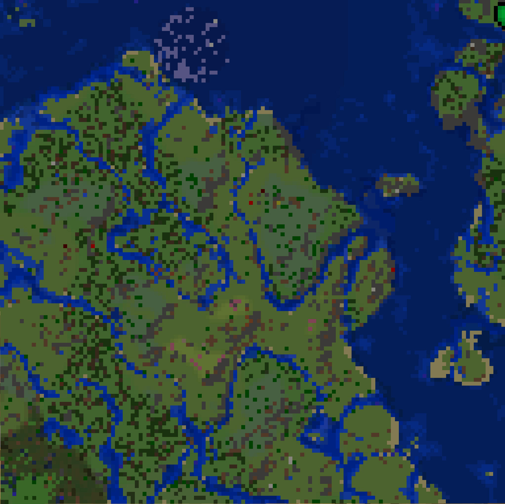

マイクラ地図 — 座標マップ
ホバーで詳細 / ピンクリックで座標コピー
左右の枠サイズ
0.8
%
上下の枠サイズ
1.2
%
ピンがズレる場合はスライダーで微調整してね / 合ったら下のボタンで値を保存
この値をURLに保存
拠点
村
ワクワク洞窟
前哨基地
その他

地図画像が見つかりません
このHTMLと同じフォルダに画像を置いてください
Minecraft_for_Windows_2026_06_03_3_44_07.png
使い方
・このHTMLと地図スクショを
同じフォルダ
に置いてブラウザで開く
・ピンに
ホバー
すると名前と座標が表示される
・ピンを
クリック
すると座標をクリップボードにコピー
・ピンがズレてる場合は上の
スライダーで枠サイズを調整
してね